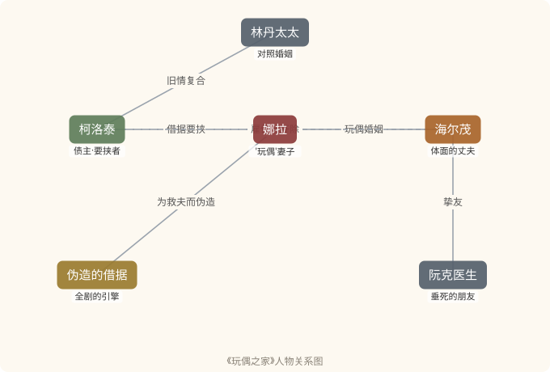

玩偶之家
一、基本信息
| 作者 | 易卜生 |
|---|---|
| 成书/出版 | 1879年出版并于同年首演（Britannica：Published in Norwegian as Et dukkehjem in 1879, performed the same year） A Doll's House (Et dukkehjem) — Encyclopaedia Britannica（百科全书） |
| 国别/地区 | 挪威 |
| 时代 | 近代 · 19世纪 |
| 体裁 | 话剧（三幕社会问题剧） |
| 语言 | 挪威语（丹麦-挪威书面语） |

二、创作背景
创作背景：1879年，易卜生在罗马写成《玩偶之家》——妇女在婚姻与法律上的无权地位是19世纪欧洲的现实（妻子无独立法人格、借款需丈夫署名等，通说待核）。
首演与争议：1879年哥本哈根皇家剧院首演（通说待核）；'the scandal over A Doll's House'（Britannica：Notorious in his day as a 'Bad Old Man'——该剧与《群鬼》引发的丑闻）。德国剧院曾被迫改演'团圆版'（娜拉不离开——易卜生本人反对的改动，通说待核）。
结构：三幕剧，'analytic exposition'（分析式回顾，Britannica）——一桩三年前的假签名秘密在圣诞前夜被逐层揭开。
三、内容脉络
第一幕：圣诞前夜。海尔茂律师刚获银行经理职位，妻子娜拉'小鸟儿''小松鼠'般撒娇幸福。林丹太太（娜拉旧友）求职；银行职员柯洛泰（娜拉的债主）以此要挟——娜拉八年前为救丈夫性命伪造父亲签名借钱（Britannica：Nora once secretly committed fraud to obtain a loan that saved Torvald's life），如今要暴露。
第二幕：娜拉如坐针毡（'besides the tarantella dance'），既怕事发又幻想'奇迹'——丈夫会挺身承担一切。柯洛泰把借据投入信箱。
第三幕：舞会后海尔茂拆信，勃然大怒——'你毁了我的前途'（大意），斥娜拉虚伪、不能再教育孩子（Britannica：worried about his social reputation, reacts with outrage and repudiates her）。柯洛泰退回借据，海尔茂立即'原谅'一切。娜拉如梦初醒：'我一直是你的玩偶妻子'——她宣布脱离丈夫与孩子（Britannica：Disillusioned, Nora declares her independence from husband and children and exits），坐下算账：八年婚姻的账目——然后关门而去（'the door slam heard round the world'——'震惊世界的关门声'为后世戏剧史通用说法，通说待核）。
四、主要人物表
| 人物 | 身份 | 说明 |
|---|---|---|
| 娜拉 | 海尔茂之妻 | 从'玩偶'到'人'的觉醒——伪造签名既是'罪'也是爱与勇气的证明 |
| 海尔茂（托伐） | 律师·银行经理 | '体面'高于一切：危机时的真面目使婚姻神话崩塌 |
| 柯洛泰（尼尔·柯洛泰） | 银行职员·债主 | 道德暧昧的敲诈者，也是娜拉的'第一推动者' |
| 林丹太太（克里斯蒂娜） | 寡妇·旧友 | 以'讲真话婚姻'为对照——与娜拉形成婚姻观的两极 |
| 阮克医生 | 家庭朋友 | 遗传梅毒的'体面人'（通说解读），死亡预告者——主题的暗线 |
五、主题与艺术特点
- 玩偶与人的分野：娜拉被'小鸟儿、小松鼠'式宠爱驯化——爱即囚禁（'首先我是一个人'的宣言，原文意，待核）。
- 法律与道德的错位：娜拉犯的'罪'出于爱，海尔茂的'守法'出于体面——易卜生迫使观众重新定义道德。
- '奇迹'的幻灭：娜拉幻想丈夫牺牲，等来的却是自保——婚姻浪漫叙事的祛魅。
- 艺术特点：分析式回顾（一桩旧债三幕揭开）、圣诞意象（生命/债务的倒计时）、开放式结尾（关门声）。
六、影响与评论
- Britannica（A Doll's House 条目）：landmark of realist drama about marriage and female independence——现实主义戏剧与女性独立议题的里程碑。
A Doll's House (Et dukkehjem) — Encyclopaedia Britannica（百科全书） - Britannica（Ibsen 条目）：该剧与《群鬼》的丑闻使易卜生当年被称'Bad Old Man'；后被进步剧场拥抱，影响萧伯纳、斯特林堡。
Henrik Ibsen — Encyclopaedia Britannica (by Robert M. Adams)（百科全书） - 世界回响：'娜拉出走'成为世界戏剧史最著名的结尾之一；中国新文化运动中胡适《易卜生主义》（1918）与鲁迅《娜拉走后怎样》（1923）以其讨论妇女解放（通说待核）。
Henrik Ibsen — Encyclopaedia Britannica (by Robert M. Adams)（百科全书） - 舞台史：从1879年首演至今全球常演；2013年《卫报》称其'more relevant than ever'（Britannica A Doll's House 条目引述 external sources——The Guardian calling it 'more relevant than ever' in 2013）。
A Doll's House (Et dukkehjem) — Encyclopaedia Britannica（百科全书）
七、阅读建议
- 19世纪欧洲婚姻法背景（妻子无法人资格）需要注释。
- '伪造签名'的道德重量：观众须同时是法官与辩护人——易卜生的设计。
- 对话的潜台词（海尔茂的'爱'语）需要慢读。
- 潘家洵译《玩偶之家》（人民文学出版社《易卜生戏剧四种》）：通行经典译本。
- 《易卜生文集》（人民文学出版社，八卷，通说待核）：研究型。
- 英译：Michael Meyer 译本（通说待核）。
通读三幕（约2小时）→ 精读第一幕柯洛泰要挟场与第三幕'算账'场 → 对照《群鬼》与鲁迅《娜拉走后怎样》讨论'出走之后'的问题。
八、待核实
- 首演（1879年12月21日哥本哈根皇家剧院说）与首演反应（报纸社论战）待核。
- 德国'改写结尾'事件（1879—80年 Berlin 演出 forcing Ibsen to write an alternative ending）的细节待核。
- 潘家洵译本的出版信息（1958年版？）待核。
- '震惊世界的关门声'短语的最初出处待核。
本页主要来源
- A Doll's House (Et dukkehjem) — Encyclopaedia Britannica（百科全书）
- Henrik Ibsen — Encyclopaedia Britannica (by Robert M. Adams)（百科全书）
易卜生的其他收录作品：玩偶之家